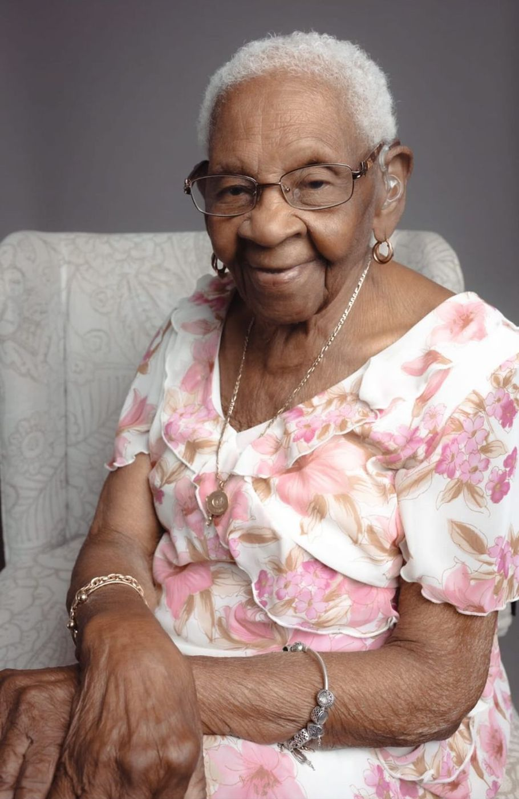
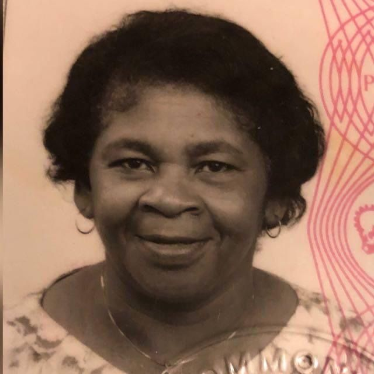

In loving memory of
1 March 1928–29 September 2026
98 years of life. Generations of love.
Mother of eight, grandmother, great-grandmother and great-great-grandmother, aged 98. We invite family and friends to join us as we celebrate her life and lay her to rest.
A tradition of remembrance
Come and remember Momsie with the family in the traditional way, with food, music, singing and stories.
The family is cooking. The hall is open from 12pm for setting up, so if you can help with tables, decorating or the kitchen, let the family know.
Momsie's favourite hymns and songs will be played on the night. The list will be added here soon.
The funeral
All times are UK time. Please arrive a little early for the church service.
St Paul's Church, 60 Park Lane, Tottenham, London N17 0JR
Led by Pastor Keith Jackson.
Get directionsRegency Banqueting Suite, 113 Bruce Grove, Tottenham, London N17 6UR
Join the family afterwards to share food and memories. On-site parking is available.
Get directionsSt Paul's Church · 11am
The family is preparing the order of service with Pastor Keith Jackson. Hymns, readings and tributes will be listed here.
Paying respects
Viewings will be held at a Co-op Funeralcare branch, not at the church. Dates, times and venue will be confirmed here.
| Date | Time | Venue |
|---|---|---|
| To be confirmed | To be confirmed | To be confirmed |
Good to know
Best dressed in black. Pink ribbons will be supplied.
St Paul's is on Park Lane, close to the Tottenham Hotspur Stadium. Roads around the stadium close on match and event days, so check before you travel and leave extra time. White Hart Lane and Northumberland Park stations are both nearby.
Street parking near the church is limited, so share lifts where you can. The Regency Banqueting Suite has its own car park for the repast.
Where the family cars leave from, and at what time, will be shared here.
If you need step-free access, a wheelchair space or help getting between the church, cemetery and repast, let the family know in advance so it can be arranged.
Family flowers are being arranged by Grandma's children on the flower sign-up page. If you would like to send your own, please speak to the family first.
A video link is being arranged for family abroad and anyone who cannot attend. The link will be posted here.
Her life

Catherine raised eight children and watched her family grow into grandchildren, great-grandchildren and great-great-grandchildren, each of whom knew her by their own special name.
Where she was born and grew up will be added here.
To follow.
To follow.
Mother to eight children, then grandmother, great-grandmother and great-great-grandmother.
The family gathered to celebrate her on a gold throne, with two birthday cakes.
Aged 98.
What we called her
Every name belonged to someone who loved her.
Her legacy
Each family is shown under its parent. More names will be added as the family sends them.
Photographs
Tap any photo to see it larger.
Videos
Tap a video to play it. Turn your sound on.
Tributes
Sister Catherine, affectionately called Sister C, was a dear friend to me when she visited Canada. She was such a jovial person. I was very fortunate to talk to her two weeks before her passing. Fly high, Sis C. You have finished your race; you have gone home to meet your Saviour.
My condolences to the family. I will always remember her captivating smile and laughter. 🙏🏾
My condolences go out to the family.
My condolences! Sister Catherine was my grandmother’s youngest sister. We didn’t see her too often, but when we did, she was a breath of fresh air. 💛
My heart goes out to the entire family at such a sad time. May Aunty Catherine’s soul rest in everlasting peace. 🙏🏿
Sincere condolences, family. So sorry to hear of the passing of your mum. She was affectionately known to me and my family as Miss Catherine, and she will be sadly missed by all. I am praying and asking the good Lord to give the family the strength to get through this sad time. Blessed love. 🙏❤️
Aunt Catherine was truly a remarkable woman who blessed us with 98 wonderful years. Her life spanned generations, and through those years she touched the lives of so many people around her. Her loving, caring nature towards everyone will always be remembered. Rest in peace, Aunt Catherine. ❤️
To my cousins,
Those we love don’t go away,
they walk beside us every day.
Unseen, unheard, but always near,
still loved, still missed and very dear.
“The Lord is close to the brokenhearted and saves those who are crushed in spirit.” Psalm 34:18
With heartfelt sympathy. May God’s peace surround you all, His love comfort you all, and His promises give you all strength, today and always, family. Although no words can ease the pain, may you all feel comfort and His loving presence with you all, today and always.
Lots of love from all of us! ❤️
The members of St Philip’s Anglican Church in Old Harbour Bay, St Catherine, Jamaica, give their condolences to the family. Praying for comfort and strength. 🙏🏾
The joy of spending time with Momsie filled my heart with love, laughter and happiness. She was truly a spoilt, funny and cheeky princess. Nothing ever got past her without a comment.
I remember quoting Scripture with her. She loved listening to the audio Bible, and she would quote Scripture with her eyes closed, ready to fall asleep. I loved reading Scripture to her, too.
I have to share this with you (lol). One evening, as we were getting ready for bed, I was reading a passage to her when I realised that I had got one part slightly wrong. I couldn’t remember the exact wording, but I carried on, thinking she wouldn’t notice. But this was Mrs Catherine, Princess Cheeky Nembhard. Nothing got past her.
When I said “Amen”, she calmly replied, with her eyes still closed, “You said the last part wrong.” I shouted “Lord Jesus!” and we burst out laughing. Nothing ever got past Momsie.
Her favourite Psalm was Psalm 23. Her faith was a beautiful testimony, and her words brought comfort and peace to everyone who heard them. Even though Momsie walked through the valley of the shadow of death, she did not fear, because she knew that her Lord was with her. His rod and staff comforted her and guided her on her journey to be with Him. 🙏🏽
The Lord is my shepherd; I shall not want. He maketh me to lie down in green pastures: he leadeth me beside the still waters. He restoreth my soul: he leadeth me in the paths of righteousness for his name’s sake. Yea, though I walk through the valley of the shadow of death, I will fear no evil: for thou art with me; thy rod and thy staff they comfort me. Thou preparest a table before me in the presence of mine enemies: thou anointest my head with oil; my cup runneth over. Surely goodness and mercy shall follow me all the days of my life: and I will dwell in the house of the Lord for ever. (Psalm 23)
She would always ask me, “How is your mummy?” I would tell her, “Mum, my mummy passed away many years ago. She’s with the Lord.” 🙏🏽
Oh, what a precious joy Momsie was to everyone, and what a beautiful honour it was to know such a beautiful soul. She loved the Lord with all her heart. She loved all her children, especially her grandchildren, great-grandchildren and great-great-grandchildren. She loved the entire family and her friends unconditionally. ❤️
This life is only temporary. I pray and hope that we will all see you again in the new life in heaven, very soon. 🙏🏽
Rest well, Momsie. Love you and miss you. 🥲🙏🏽❤️
Mrs Nembhard was a beautiful soul. Every time I saw her, at family gatherings or when Janette took me to visit, she would always ask, “How’s Eddy?”, my children’s father in Jamaica, and “Dorrett, you still in Africa?” and smile.
Janet, you are such a beautiful soul. I know that all of you will be OK. I have always admired your love and loyalty for each other as a family. Mrs and Mr Nembhard trained you all well. 💯
Aunt Catherine was truly an angel on earth, always showing love, sharing her wisdom and lighting up every room with her smile. I am truly thankful for every moment I spent with her. ❤️
Sending our heartfelt condolences at this time for the loss of your mum, Aunt Catherine. Her memory will continue to be cherished. All our love and best wishes. xxx
We all loved Aunt Catherine so much; she always cared about all her family with a smile. Stay strong and look after each other. xxx
I have really struggled to pen what I feel. No words! Still in complete shock and totally broken-hearted. The last of the generals of Berridge Road, Nottingham, quietly departed from this world in the early hours of 29th September 2026, ushered into the loving arms of Jesus, where she will reside and forever rest. 🙏🏾❤️
Living next door from the tender age of 4, and now 61, I grew up with the Nembhard family, and we quickly became family, as we are to this day.
A mixture of emotions because of this great loss that only God understands. But one thing for sure gives me great comfort. God says in Psalm 34:17–18:
“The Lord hears his people when they call to him for help. He rescues them from all their troubles. The Lord is close to the broken-hearted and rescues those who are crushed in spirit.”
Many will be crushed in spirit because of this great loss, and many will show gratitude for the long life she lived, building fond memories with all her children, grandchildren, great-grandchildren and great-great-grandchildren. What a divine legacy to leave behind. 🙌🏾
Her children loved her and honoured her until the very end, earning themselves the promise in Exodus 20:12: “Honour your father and your mother, so that your days may be long here on earth.”
Pam Pam and all her siblings, whom served their mom very well, I love you all and applaud you all. 👏🏾👏🏾👏🏾
Now wear your crown with grace. 👑💕
When Pam Pam sent me this video, I knew I had to go and say goodbye. I saw that Miss Catrin was ready to leave. I never made the trip.
4 weeks later, I knew she would never hear my goodbye, but that I would hear that she is no longer with us. Then my cousin Colin came with the news that she had sadly passed in her sleep.
Goodnight, Anty Catrin. One of my greatest memories of all time. Sleep on, my beloved, take your rest. 😴🙏🏾
Share a memory
Would you like to add a tribute, a memory or a photo of Catherine to this page? Send it to Jaymie on WhatsApp with your name and where you are, and it will be added here for the whole family to keep.
After the funeral
The family will share a thank-you message here, along with photos from the Nine Night and the funeral.